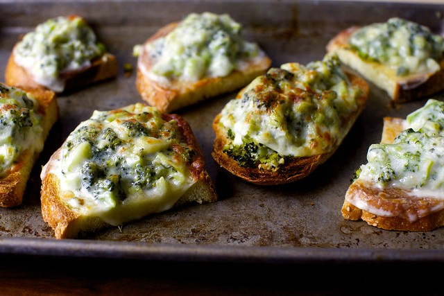

Broccoli Melts

I usually make this with broccolini, which I prefer because it much less notably discolors when hit with lemon juice. Outside of aesthetics, both broccolini and regular broccoli work the same here, and are equally delicious. If you’re the sort of person who enjoys anchovies, they meld well here with the garlic and pepper flakes.
Yield: 8 small-medium open-faced melts
Ingredients:
- 1 pound broccolini or regular broccoli
- 2 tablespoons olive oil
- 3 cloves garlic, minced
- A few pinches red pepper flakes, to taste
- Finely grated zest, then juice, of 1/2 lemon (juice before zesting only if you enjoy being grumpy)
- Coarse salt, to taste
- 1/2 cup finely grated aged pecorino romano cheese
- 8 thin slices totally unfancy deli provolone
- 8 slices bread of your choice
Steps:
-
If using broccolini, cut it into 2-inch segments. If regular broccoli, peel the stems with a vegetable peeler first so that they cook evenly, and cut the rest into large chunks.
-
Pour about 1-inch puddle of salted water into a large sauté pan and bring to a boil. Add broccoli and cover with a lid and boil/steam for 2 minutes. Drain well and pat dry on paper towels, wringing out as much extra liquid as possible. Chop into small (roughly 1/2-inch) bits.
-
Wipe sauté pan dry and heat over medium. Add olive oil and let it heat for a full minute. Add garlic and pepper flakes, cooking for 1 minutes, or until the garlic is just beginning to turn golden. Add the broccoli and cook 1 to 2 minutes more, seasoning with salt. Transfer mixture to a bowl and add lemon zest, juice, pecorino and more salt and pepper flakes to taste.
-
Heat broiler. Arrange slices of bread on a tray and lightly toast on both sides. Scoop broccoli mixture onto each slice of bread, lay a slice of provolone over it and run under the broiler until cheese has melted and begun to blister. Eat. Repeat. Don’t forget to share, or at least hide the evidence if you decide not to.
Recipe from: Smitten Kitchen